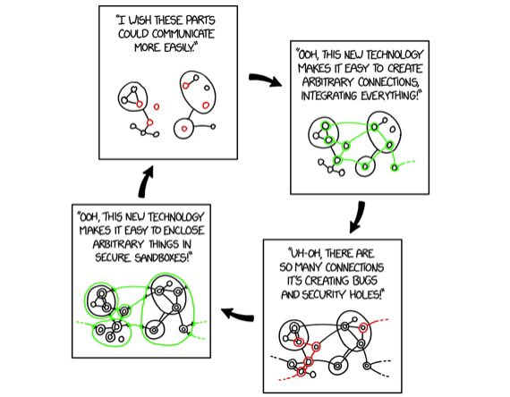

September 2018
Just learned about updates in the BRIDG info model - including Study! (Added 2015 so, I can see I haven't followed the development of it for a while.) cbiit.github.io/bridg-model/HT… cc: @nomini @NovasTaylor
Interesting! I had missed this. Looking forward to see more results from this twitter.com/veevasystems/s…
Think I have seen a couple if circles of this over the years: Sandboxing Circle xkcd.com/2044/

Cool - I just realiserad one of my #DataScience favourites on Twitter: @KirkDBorne is one of the keynote speakers at #EUConnect18 in early Nov. phuse.eu/eu-connect18-k…
When arguing for the capability to search metadata describing clinical dataset across trials we often use eosinophils as an example. Will talk about this at PhUSE EU Connect 2018 phuse.eu/eu-connect18 twitter.com/AstraZeneca/st…
Use of ontologies and knowledge graph for e-commerce at @ZalandoTech by @katsi111 (HT @FrankVanHarmele ) jobs.zalando.com/tech/blog/sema…